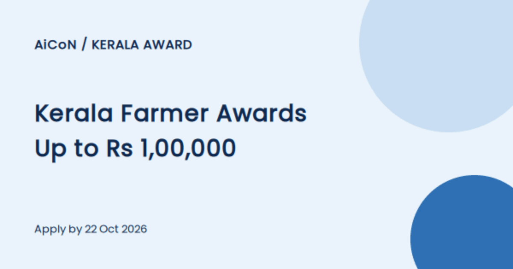

Kerala farmer awards 2026-27: up to ₹1 lakh for animal husbandry farmers, apply by 22 October
The Kerala Animal Husbandry Department is inviting applications for its state and district farmer awards. State awards go up to ₹1,00,000, with a certificate and a plaque. Forms must reach the local government veterinary hospital by 22 October 2026.

State-level awards (6 categories)
- Best dairy farmer: ₹1,00,000
- Best commercial dairy farm (Ksheerasree): ₹1,00,000
- Best mixed farmer: ₹1,00,000
- Best poultry farmer: ₹50,000
- Best young farmer: ₹50,000
- Best woman farmer or entrepreneur: ₹50,000
Each state award also carries a certificate and a plaque.
District-level awards
- Best dairy farmer: ₹20,000
- Best mixed farmer: ₹10,000
Category notes from the application form
- Dairy farmer: at least one year of keeping cows, with ownership of the highest-yielding cow shown. Farm licence or registration where it applies
- Mixed farmer: three or more animal husbandry activities, counted only if run in your own name
- Poultry farmer: commercial-scale layers, broilers, ducks or quail, with the required farm licence. Backyard poultry and broiler sales outlets are not considered
- Young farmer: under 35, with age proof. Kitchen-yard poultry, fish farming, broiler sales outlets and ornamental birds are not considered
Rules that apply to all
- Details you give are checked by field verification and document checks. Keep records for production, sales, vaccination and registers ready
- Anyone who won a state farmer award in the last 3 years cannot apply again in the same category
- False information makes the application invalid
How to apply
- Get the application form from the Animal Husbandry Department website (ahd.kerala.gov.in) or from your nearest government veterinary hospital
- Tick one award category and fill in the farm details and the annexure for that category
- Submit the filled form at your local government veterinary hospital by 22 October 2026
The notice does not name an online portal, so this is a paper form route. Confirm any extra documents with your veterinary hospital.
We read the Kerala PRD press release and the department notice with its application form (PDF) on 15 October 2026. Parts of the form's Malayalam text were hard to read in extraction, so we only used items that were clear. We did not submit an application.
Sources: Kerala PRD press release (9 Oct 2026), Department notice and application form (PDF). Checked 15 October 2026. This is an AiCoN explainer, not a government publication.